AI 产品情报 · 2026-11-06（周五）
本版覆盖媒体 / 一手源约 20 家（官方/一手 8 · 中文 7 · 外文 5） ：Frameboy 一手是 World Labs 博客 + 可玩 demo frameboy.worldlabs.ai，中文见凤凰网科技，英文见 Unite.AI / RuntimeWire；GPT-6 Cyber 一手是 OpenAI 博客 + System Card，外文 The Verge / TechCrunch / CSO Online，中文第一财经/TechFlow；Omni 1.2 Flash 一手是 Google DeepMind 开发者博客 + Google Cloud / Workspace 更新，中文界面/新浪财经快讯；Ling-3.2-flash 一手是蚂蚁百灵 changelog + 模型文档，中文 IT之家，日文 ORIENS。窗内量子位/机器之心未见这四条专稿，不编造。
今日要点（先看这四条）
World Labs 发 Frameboy ：把 Atlas 世界模型做成浏览器里最高约 15 fps 的实时漫游 demo；云端 GPU 推流；Viewfinder 闭测可「先搭场景再实时逛」。世界模型公司必看。OpenAI 发 GPT-6 Cyber ：面向授权安全研究的漏洞发现/利用模型；ExploitGym 48.5%（相对 5.6 Cyber +51%）；Preparedness 升至 Critical；仅 Daybreak Red 审核客户，无消费端 demo。Google 发 Gemini Omni 1.2 Flash 并 GA ：原生最长 15 秒视频（原 10 秒）、多轮对话改片、参考一致性增强；720p 约 $0.07/秒，价降约 30%；API / Cloud / Vids 可用。蚂蚁百灵上线 Ling-3.2-flash ：相对已报的 3.1，这是原生多模态 新版本（同档 560B/25B/1M，但原生吃图/视频）；强化视觉、长程 Agent、3D、医疗；前两周限时免费。勿写成 3.1 复读。
世界模型 · 实时交互 World Labs 发布 Frameboy：Atlas 世界模型进浏览器，最高约 15 fps 实时转相机结论： 这是李飞飞 World Labs 把 9 月的 Atlas 从「等几秒/几分钟出一条视频」推进到「边转相机边出画」的研究预览。产品形态是云端 GPU 推流到浏览器的 Frameboy demo，并嵌进闭测 Viewfinder。对我们：控制方式接近 WASD/相机漫游，比逐帧精确 6-DoF 轨迹更贴合自家接口；必开
frameboy.worldlabs.ai 亲测，别只看 GIF。注意：15 fps 是上限、要烧云端 GPU、官方承认比本地渲染贵。
1. 发生了什么
美东 2026-11-05 （北京时间约 11-06 凌晨），World Labs 发博文 Frameboy: Atlas in Real-time ，并开放研究预览 demo。Atlas 是两个月前发布的自回归世界模型：一帧一帧生成、像素级相机控制。Frameboy 跑的是高度优化的 Atlas 变体，把画面从云端 GPU 流式推到浏览器，官方写「最高可达 15 fps 」。同一天把实时能力叠进网页应用 Viewfinder （闭测，需候补名单）：先逐帧搭场景，再切 Frameboy 覆盖层实时逛。
一手：World Labs 博客 11-05 · 可玩：frameboy.worldlabs.ai · 中文：凤凰网科技 · 外文：Unite.AI · RuntimeWire · Spatial Insider
2. 产品介绍
交互： 不是一次性出固定视频；用户像游戏里转相机，模型按位姿持续出新画面。可从单图长出可逛空间，也可用多视角照片做真实地标的新视角合成。相对 RTFM： 去年有轻量实时 demo RTFM；Atlas 更大、数据更多——RTFM 偏已有视点插值，Atlas 可从单图/文本长出场景。Viewfinder： 逐帧生成含颜色+深度；再开 Frameboy 流式覆盖。闭测，需 waitlist。成本边界： 官方明说必须跑在强 GPU 云上，「相对本地渲染不便宜」；15 fps 是峰值，不保证全场景稳帧。
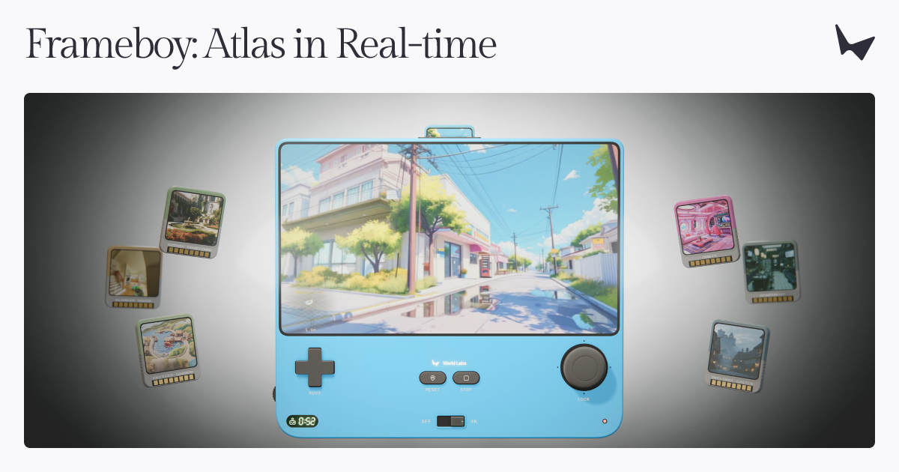
World Labs 官方 OG——看完应搞懂：这是 Atlas 实时研究预览的主视觉，不是本地可下载权重。
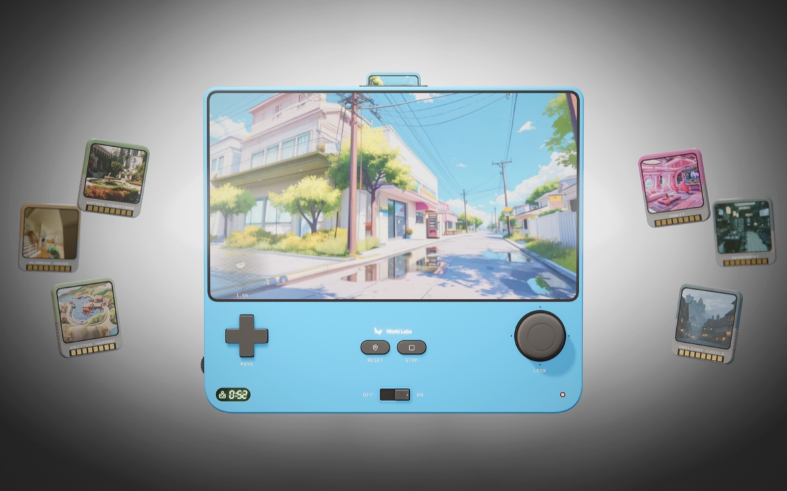
frameboy.worldlabs.ai 的 OG——蓝色「卡带机」隐喻：换场景卡带、实时出画。
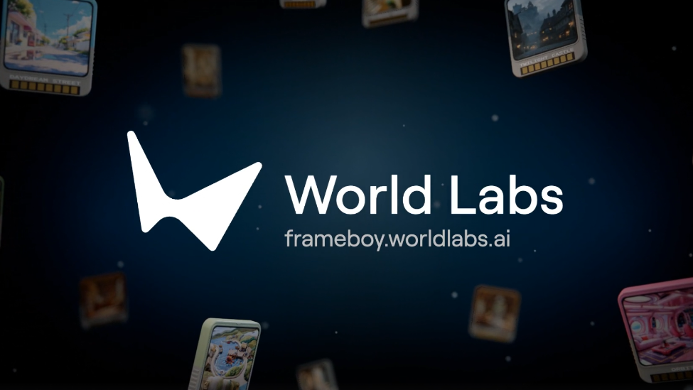
凤凰网科技配图——中文侧把卖点说成「不用预设镜头也能实时探索」。
页内视频（官方 CDN 已落本地）
World Labs 官方 · frameboy-hero
看完应搞懂：慢速「点关键帧→等生成」vs 实时「转相机连续出画」的体验差。
World Labs 官方 · real-world-landmarks
看完应搞懂：多视角真实地标输入后，可在浏览器里转新视角，不只是幻想场景。
怎么自己看（15 分钟，优先亲测）
① 打开
frameboy.worldlabs.ai ，选一个 curated 场景，用鼠标/触控转相机，感受延迟与一致性 → ② 回读
官方博文 「Why speed matters」段，对照慢速迭代 vs 实时探索的两段动画 → ③ 若有 Viewfinder 资格，试「先搭后逛」。看完应搞懂：实时不是更高画质，而是把「生成」变成「导航」。
本版作者打开了官方 demo 页并核验可访问；具体场景帧率/排队/账号墙以你当场为准。15 fps、云成本、研究预览边界均为厂商口径。
3. 导致什么影响（含竞品）
vs Google Genie 4（已报 10-28）： Genie 4 主打原生音视频 + 键盘/文本导演，仍是研究预览分发；Frameboy 更强调「像素级相机控制 + 浏览器实时推流」可玩入口。Genie 偏「导演世界」，Frameboy 偏「摄影机漫游世界」。vs Odyssey / 快乐生蚝 / Zing 等可玩世界： Odyssey 系常见动作条件与固定分辨率实时；Frameboy 挂在 Atlas 新视角合成能力上，单图/多视图进、相机出，更像空间智能 demo，而非完整游戏引擎。vs World Labs Marble / 离线 Atlas 视频导出： Marble 走可编辑持久 3D 资产；Frameboy 是流式帧生成。同一公司两条产品线：资产化 vs 即时漫游。vs 可灵 / Runway 长视频： 那些是「生成一条片」；Frameboy 是「持续响应用户相机」。评测口径完全不同——应对齐 WBench/交互世界，而不是单镜 VBench。
对我们（世界模型 / 数据生产）
三条可执行：① 把「交互帧率 + 相机一致性」写进验收，而不是只看离线视频美学；② 自家 WASD+IJKL 控制可对标 Frameboy 的实时相机回路做主观对比；③ Viewfinder「先搭场景再实时」接近数据产线里的 preview→explore。别被 15 fps 营销带跑——记云端成本与稳帧条件。
4. 用户如何评价
官方博文 + 可玩站同日上线
凤凰网科技中文快讯
Unite.AI / RuntimeWire / Spatial Insider 英文跟进
窗内量子位未见专稿
正面： 中英文报道都抓住「不用预设完整镜头轨迹」；空间/影视/机器人仿真用例被反复点名；可玩链接降低「又是论文 GIF」怀疑。批评 / 谨慎： 云端贵、15 fps 峰值、研究预览；X 账号 worldlabsai 当前检索异常（平台显示 suspended），热度信号改看博文与第三方稿。独立第三方帧率压测本版未见。可信度： 产品上线与 demo URL 可核验；性能数字=官方；画质/长期一致性需自测。
安全 Agent · Critical OpenAI 发布 GPT-6 Cyber：授权漏洞发现更强，越界率大降，仅 Daybreak Red结论： 这是 OpenAI 把网络安全专用模型从 High 拉到 Preparedness Framework 的 Critical 档，并强调「会找洞、更听授权范围」。ExploitGym 48.5% vs GPT-5.6 Cyber 32.1%（相对约 +51%）；自报在 Firefox 挖出 81 个新高危、Linux 上做出 948 个提权利用。无 ChatGPT 消费 demo——只对审核通过的 Daybreak Red 客户开 API/Codex。对我们：跟世界模型无直接产品对标，但「高能力 + 强对齐 + 窄分发」是 Critical 能力的标准打法；TechCrunch 提醒防御方资源跟不上攻击面。
1. 发生了什么
美东 2026-11-05 ，OpenAI 发布 GPT-6 Cyber ：训练目标是在研究者划定的范围内发现并验证可利用漏洞。配套加长 System Card，并升级误用监测、IP allowlist、关键基础设施相关拦截。访问：先给部分 Daybreak Red，随后扩到全部 Red；同时向全部 Red 放 GPT-5.6 Cyber；Daybreak Blue（偏防御验证）继续扩 GPT-6 Astra。
一手：OpenAI 博客 · System Card · 外文：The Verge · TechCrunch · CSO Online · 中文：第一财经 · TechFlow
2. 产品介绍
基准（厂商）： ExploitGym 48.5%（5.6 Cyber 32.1%，Astra 约 42.4%）；网页黑盒渗透新评测 recall 40.3% vs Astra 32.0%；RemoteExploitBench 上 Cyber 完成 95%，Astra+Blue 拒答 100%。对齐： ExploitGym Honeypot（仿 Hugging Face 事件）——无部署提示时 99.93% 不打范围外服务（5.6 Cyber 94.49%），有提示时 100%。真实影响（厂商/客户引言）： Firefox 81 新高危 + 帮助出补丁；Linux 复现 1724、利用 948；Cisco / Calif / CodeRabbit / Palo Alto / Dragos 等用例。谁能用： 审核 Daybreak Red；API 默认 IP 白名单；另设 Critical Infrastructure 分组与 $10 亿 Frontline Defenders 补贴叙事。
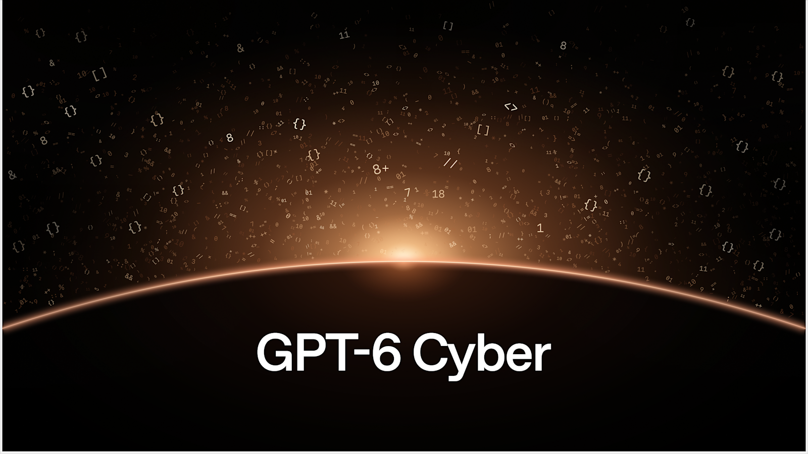
OpenAI 官方社交图——看完应搞懂：这是安全研究专用模型发布，不是消费级 ChatGPT 新皮肤。
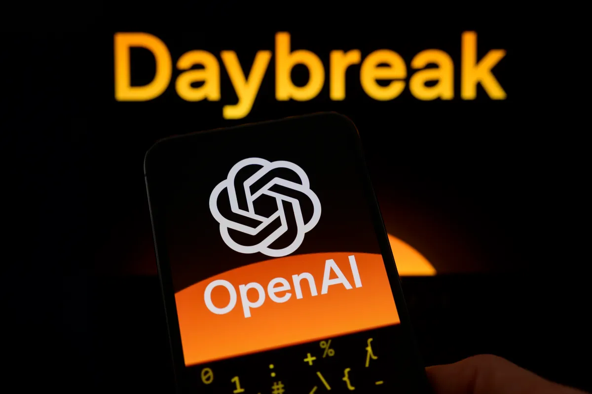
TechCrunch 配图（Daybreak 叙事）——讨论焦点是「给防御方的窗口够不够大」。
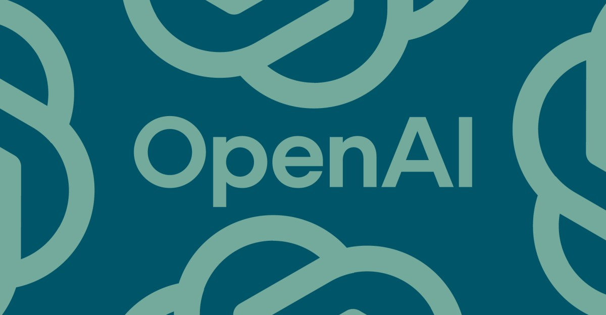
The Verge 报道视觉——强调「更会找洞，也更少越界」。
无公开消费端 demo / playground。基准、漏洞计数、客户引言均为 OpenAI 或具名客户口径；TechCrunch 指出 Linux 漏洞狩猎花费约 $120 万，相对其他研究投入并不夸张，引发「资源是否够」争论。
3. 导致什么影响（含竞品）
vs GPT-6 Astra / Daybreak Blue： Astra 是通用前沿；在多数网络攻防任务上 Cyber 更强，且 Blue 对进攻任务大量拒答。选型看你要「通用工程」还是「授权进攻研究」。vs GPT-5.6 Cyber： 分数与对齐双升，安全等级 High→Critical；旧模型反而向更广 Red 客户开放做过渡。vs 开源「去对齐」黑客模型叙事： OpenAI 用身份核验 + IP 白名单 + PSP 监测对打；TechCrunch 采访对象仍担心坏演员用开源无护栏模型。vs 传统扫描器 / 人工红队： 客户引言强调长程利用链与复杂逻辑洞；不替代人工确认与补丁工程。
对我们
世界模型训练/仿真基础设施本身是高价值攻击面——关注 OpenAI 用同类模型加固自有训练基础设施的公开叙述。产品侧无直接对标需求；安全合规若接外部模型，记「Critical 能力必须配窄分发与审计」。
4. 用户如何评价
The Verge / TechCrunch / CSO 同日
第一财经 / TechFlow 中文跟进
无消费试用 → 民间实测少
安全圈焦点在 Daybreak 门槛与 Blue「被削弱」抱怨
正面： Firefox / Linux 具体数字让「不是纸面榜」更好信；客户引言密集（Cisco、Calif、CodeRabbit 等）。批评： TechCrunch 标题即质疑「够不够」；有防御者称 Daybreak Blue 近期变「钝」；评估意识（eval awareness）仍被 OpenAI 自己点名为风险。可信度： 发布事实扎实；能力边界依赖厂商评测与少数具名客户，缺少广泛第三方复现。
视频生成 · 正式 GA Google 发布 Gemini Omni 1.2 Flash：原生 15 秒视频，价降约 30%，多轮改片结论： 这是 Google 把 Omni Flash 视频模型推到 正式 GA 的版本跃迁：时长 10s→15s、参考一致性增强、支持多轮对话改同一条片，720p 降到约 $0.07/秒 （官方称相对 1.1 降约 30%）。入口：Gemini API、Google Cloud、Vids、Flow，以及 AI Ultra 侧 Gemini App 滚动放量。对我们：这是「短广告/商品视频产线」工具，不是交互世界模型；可当廉价分镜/营销层，别跟 Frameboy 的实时相机回路混为一谈。
1. 发生了什么
美东 2026-11-05 ，Google DeepMind 产品博客与 Google Cloud 博客同步宣布 Gemini Omni 1.2 Flash 在 Gemini API 与 Gemini for business / Cloud 上 GA 。Workspace 更新写明 Vids 支持 15 秒生成与画质改进。输出带 SynthID；Provisioned Throughput 对企业可用；音频参考仍 allowlist。
一手：Google 开发者博客 · Google Cloud 博客 · DeepMind 模型卡 · Workspace / Vids 更新 · 中文：界面新闻快讯 · 新浪财经 · 外文综述：Unite.AI
2. 产品介绍
时长： 原生生成/编辑最长 15 秒 （1.1 为 10 秒）；可按 1 秒步进选 3–15 秒。一致性： 人物/商品/包装字体/品牌色跨镜头更稳；支持图像、≤3 秒动作片段、音频线索作参考。多轮编辑： 同一条片上改背景、天气、产品、画幅，而不必整段重生成——官方示范从帐篷→森林→马厩等连续换景。成本工作流： 360p/720p 快草稿 → 多轮改 → 升 1080p/4K；720p 约 $0.07/秒。已知不足（官方自述）： 快速体育动作、剧烈剧本跳切、复杂物理仍在改进。
Google 官方头图——看完应搞懂：卖点是更长、更稳、更便宜的 Flash 视频，不是新的世界模型。
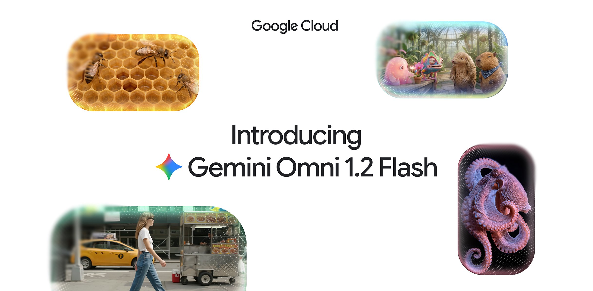
Google Cloud 博客配图——强调企业 GA、SLA / Provisioned Throughput。
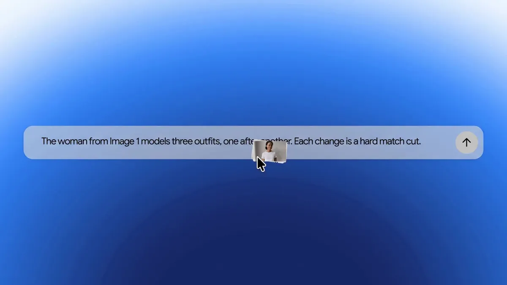
官方试穿演示静帧——多件服装参考下做 15 秒虚拟试穿，身份与衣服细节保持。
页内视频（Google 官方 demo，已落本地）
Google 官方 · ECom Try-On Demo
看完应搞懂：一张模特图 + 多件商品图 → 15 秒试穿转体，参考一致性是 1.2 的核心卖点。
Google 官方 · Video Background Editing Demo
看完应搞懂：多轮对话改背景/场景，人物表演与构图尽量不动——这是「改片」不是「重抽卡」。
怎么自己看（12 分钟）
打开
官方博文 先把页内 demo 滑完（试穿 / 换景 / 万神殿 FPV）→ 再看本页已嵌的两条 → 开发者去 AI Studio / Cloud Console 建 15 秒任务；有 Workspace 就在 Vids 试。看完应搞懂：15 秒 + 多轮编辑改变的是广告/电商产线节奏。
3. 导致什么影响（含竞品）
vs 可灵 4.0 / Runway / Luma： Omni 1.2 Flash 主打 Google 分发（Vids/Ads/Cloud）与「便宜快迭代」；可灵等在长镜、中国内容生态与某些画质风格仍有阵地。选生态与价，不单选榜分。vs OpenAI Images 2.6 GIF（昨报）： GIF 是秒级循环图；Omni 是有声可剪的 15 秒视频。互补：Images 做表情/动效预演，Omni 做投放素材。vs Frameboy / Genie 4： 后两者是可交互世界；Omni 是离线生成片。评测与产品叙事不要混用。vs Omni 1.1 Flash： 同系列升级——更长、更稳、更便宜、正式 GA；音频参考仍受限。
对我们
可作「世界模型预告片 / 数据标注说明视频 / 对内演示」的廉价层；物理一致性与可交互性仍要靠自家世界模型。官方承认复杂物理是短板——别用它做物理保真评测素材源。
4. 用户如何评价
Cloud 客户引言：Artlist / FLORA / invideo / Krea / Picsart / Photoroom
中文多为快讯（界面/新浪），深度稿少
窗内量子位/机器之心未见专稿
正面： invideo 称「prompt 跟随与物理/声音在同档很快」；Photoroom 点名 15 秒是高频用户需求；FLORA/Krea 强调「只改你要求的部分」。批评 / 空缺： 独立盲测排行本版未见；中文深度实测少；快速运动/复杂物理官方自黑。部分评测站（如 OrcaRouter）有泄露向文章，可信度低于官方 GA 公告，阅读时当传闻。可信度： GA 与定价事实扎实；画质断言混有客户引言与厂商 demo。
原生多模态 · API 蚂蚁百灵上线 Ling-3.2-flash：560B/25B 原生吃图吃视频，别当成 3.1 复读结论： 相对 seen 里已报的 Ling-3.1-flash （偏文本/Agent 个人助手），Ling-3.2-flash 是同日径上的原生多模态新版本 ：仍是约 560B 总参 / 25B 激活 / 1M 上下文，但架构级融合视觉，官方强调四大能力——复杂视觉理解、多模态长程 Agent、3D 理解与交互、医疗多模态。API 兼容 OpenAI/Anthropic；对话页可玩；上线前两周限时免费。IT之家转述自报三项基准超 Claude Opus 5（max）——厂商口径，待独立复现。权重开源节奏本版未承诺（3.1 曾走 MIT 开源叙事，3.2 目前是平台上线）。
1. 发生了什么
北京时间 2026-11-05 ，蚂蚁百灵开发者 changelog 写入：上线原生多模态模型 Ling-3.2-flash 。IT之家等 11-06 早间跟进，并列出官方对比 Claude Opus 5 的三项分数与定价。模型文档选型表把 3.2 与 3.1 分行——3.1 仍定位日常办公/长周期研发 Agent；3.2 专门吃多模态。
一手：百灵 changelog · Ling 模型文档 · ant-ling.com · 中文：IT之家 · 日文：ORIENS · 英文转述：OrcaRouter （第三方博客，非官方）
2. 产品介绍
规格： 560B / 激活约 25B / 上下文 1M；原生图像 + 文本 + 视频输入。四大强化： 复杂视觉理解；多模态长程 Agent；3D 理解与交互；医疗多模态（影像与报告）。官方自报（IT之家转述）： OmniDocBench1.5 92.21 vs Opus 5 90.56；ZEROBench(Sub) 43.71 vs 39.52；Vision2Web 85.86 vs 80.20；DesignArena 图像转前端 Elo 1238 进前十。定价（媒体转述）： 输入约 $0.30 / 输出约 $0.90 每百万 tokens；前两周限时免费。以控制台为准。接入： 对话页；OpenAI / Anthropic 兼容 API（蚂蚁百炼等）。
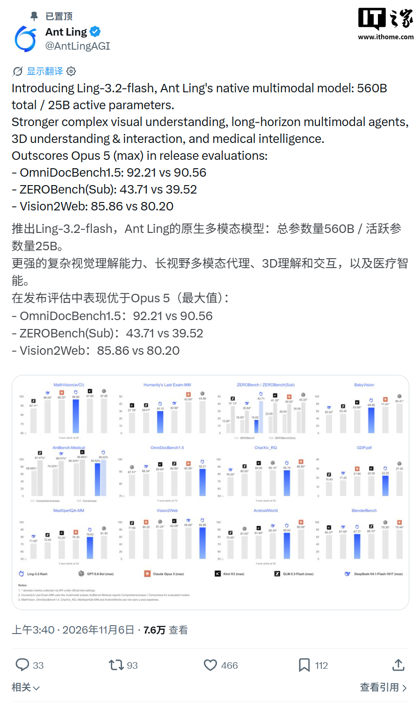
IT之家配图——中文侧把 3.2 概括为「原生多模态 + 限时免费」。
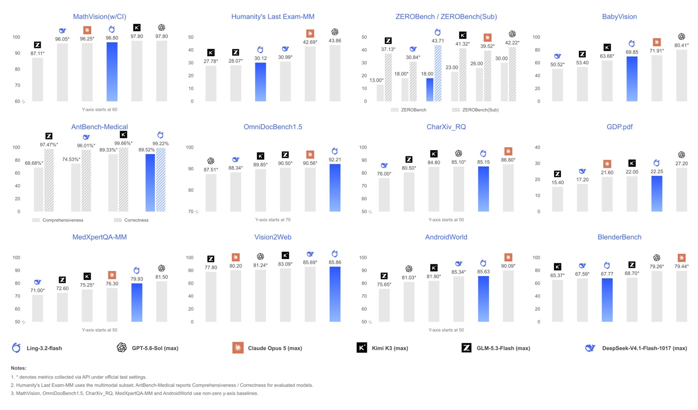
IT之家第二张配图——看分数时记住：这是厂商自报，不是第三方盲测。
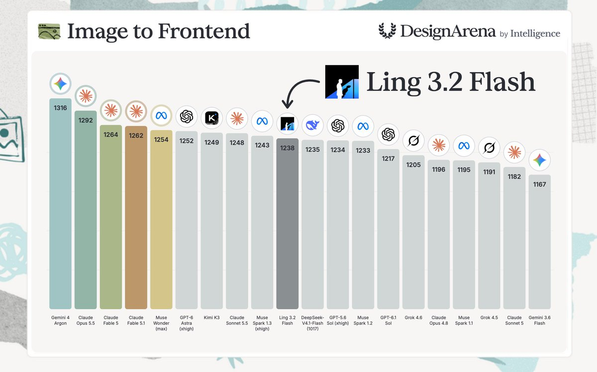
IT之家第三张配图——产品落地在对话页与兼容 API，而非本版可见的新权重包。
标题与正文一律写 Ling-3.2-flash 。3.1 是 10-29 已报的 Personal Agent 开源线；3.2 新增的是原生多模态能力。本版未见 Hugging Face 正式权重页；「开源」一词不要从 3.1 惯性抄过来。
怎么自己看（10 分钟）
打开
changelog 确认 11-05 条目 → 读
选型表 对比 3.2 vs 3.1 一行 → 上对话页随手传图/短视频问空间关系或文档题 → 需要 API 就走兼容协议把 model 设为
Ling-3.2-flash。看完应搞懂：这是多模态升级，不是 3.1 换皮降价。
3. 导致什么影响（含竞品）
vs Ling-3.1-flash（已报）： 同档参数，任务面从「文本 Agent」扩到「视觉/视频/3D/医疗」；选型按模态，不按版本号大小盲目替换。vs Claude Opus 5 / GPT-4o 类闭源多模态： 官方挑三项基准宣称超越 Opus 5——需独立复现；优势叙事在价格与限时免费，不在全面碾压。vs Qwen-VL / Hy4 视觉 / Gemini： 百灵强调 3D 与医疗垂直 + Agent 长程；腾讯 Hy4 更绑 Computer Use 与腾讯全家桶。生态与合规（蚂蚁金融场景）是差异点。vs 开源多模态权重（如部分 VL 开源）： 3.2 本版是 API 产品优先；若你要自托管，先确认权重是否释放，别假设继承 3.1 的 MIT 包。
对我们
3D 理解与多模态长程 Agent 两句值得跟进——可作世界模型「看图/看视频理解」基线候选。先用免费窗跑一批空间关系 / 轨迹 / 界面 Agent 题，再决定是否进正式评测集。医疗向与我们主业无关，可忽略。
4. 用户如何评价
IT之家 11-06 早间稿
changelog / 模型文档已更新
日文 ORIENS 跟进
社区实测与 HF 热度仍早期
正面： 「终于原生多模态」相对 3.1 的补齐感；限时免费降低试用门槛；兼容双协议省接入。批评 / 谨慎： 超 Opus 5 的三项是挑基准；独立评测少；权重是否开源不清晰；OrcaRouter 等二手英文稿需降权。可信度： 上线事实有 changelog + IT之家交叉；能力排名=厂商口径。
今日落选（简述）
Genie 4 相关二轮讨论 ——10-28 已报；今日只作 Frameboy 对照，不重开专条。Omni 1.2 泄露向自媒体 ——官方 GA 已出，以官方与 Cloud 博客为准，不单开「泄露」条。Hy4 权重是否已放 ——11-05 已报「未来几天」；窗内无确认正式版权重落地，不重报。Images 2.6 / 国行苹果智能 / Lion-ER——昨日已报，无实质新版本。
产品雷达 · 2026-11-06 · 仅供阿汤内部决策参考 · 事实以一手链接为准
· 往期